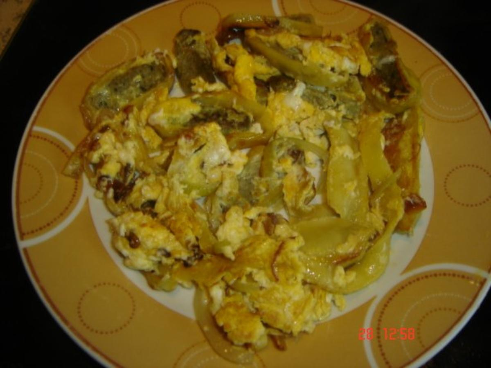

Home
Gebratene Maultaschen

Description
Maultaschen are a traditional dish from the south west of Germany, particularly from the Swabian region. If you translate Maultaschen literally into english it means mouthbags. Traditionally they are a pasta dough on the outside filled with pork meat, although the fillings can vary and there are also vegetarian and vegan options available. If you visit any supermarket in this region of Germany, they will have Maultaschen available.
Ingredients for 1 person
- 1 pack of Maultaschen (400 g usually)
- 2 eggs
- 1 large onion
- any oil, to fry
- salt and pepper, to season
Steps
- Cut the onions into long stripes. Slice the Maultaschen, so that you have stripes of a thickness, of approximately 0,5 cm.
- Sautee the onions in a pan using oil, so that they are nicely brown and glossy. You can use ice cubes or water, to make the process faster. After they are done, set them aside.
- Fry the Mauktaschen in the same pan, using some more oil. After a few minutes, they should be nicely done and turn a bit brown.
- Remove the pan from the heat and add the 2 eggs. Mix everything together, so that the Maultaschen are covered with egg.
- For the last step and the onions to the pan and season with salt and pepper.
- Now serve the dish hot on a plate and enjoy. You can even add some chives to garnish.